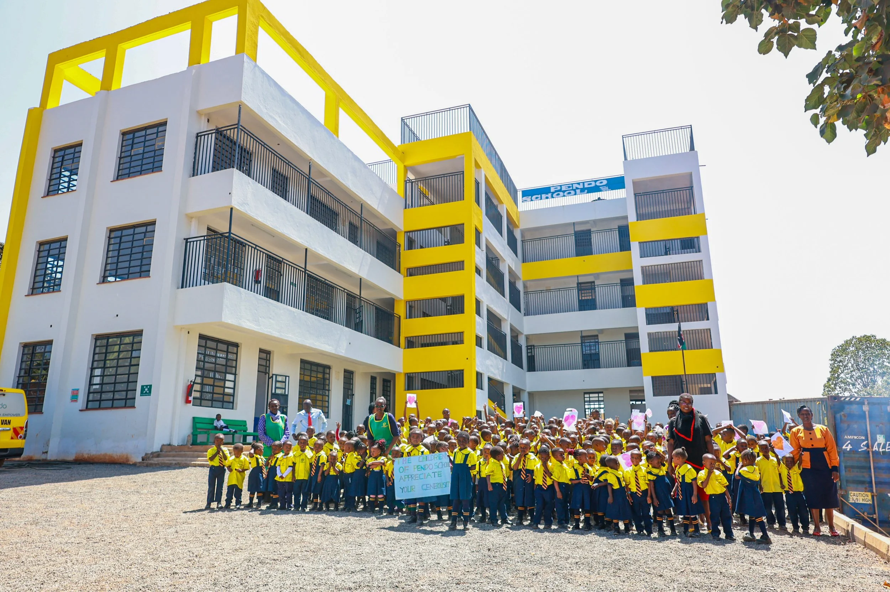
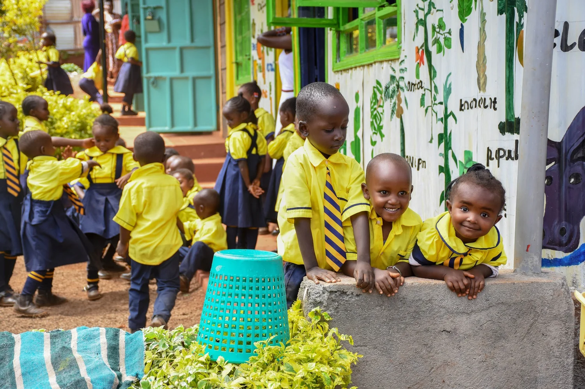
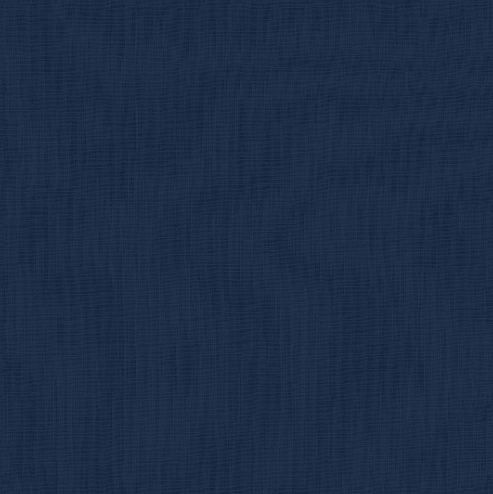

New — Exact Kutoa system
Kutoa Clone · Homepage
Playfair + Montserrat + script accents, navy/teal/ember, linen hero, dual CTAs, belief band, 01–03 services, impact, footer — Pendo photos & copy.
New — Safari package
Safari of a Lifetime
Auction safari page in Kutoa clone style — wildlife, culture, luxury, host, hub visit, inclusions & bid strip.

Kutoa-inspired
Theme D · Kutoa-inspired
Linen palette, dual questions, 01–02–03 programs, quote, story teaser, impact split, Sponsor a Seat.

New — Linen texture
Theme F · Linen Studio
Theme E layout + Poly Haven woven linen on page and dark sections (Kutoa-style fabric feel).

Modern
Theme E · Studio
Syne + Manrope, Pendo green accents + Kutoa slate darks, bento pathways, marquee — no fabric texture.

Theme A
Heritage
Forest green editorial, DM Serif hero, pathway cards, terracotta accents.
Theme B
Clarity
Mint and white, rounded Fraunces type, friendly centered hero, numbered program list.
Theme C
Impact
Full-bleed photo hero, dark bands, magazine contrast, Sisters spotlight.